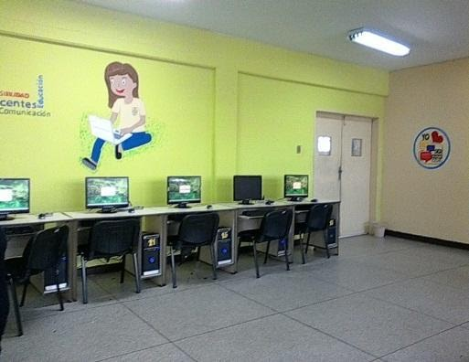

SERVICIOS QUE PRESTA LA INSTITUCIÓN
DEPARTAMENTO DE PASANTIAS:
Se encarga específicamente de buscar los cupos de los estudiantes de 6to año para realizar las pasantías en diversas empresas.
Encargado: Prof. Pedro Bermúdez.

DEPARTAMENTO DE DEFENSORIA ESTUDIANTIL:
La defensoría estudiantil se puede expresar como las encargadas estudiadas de ese tema se encuentran en posición de asesorar a los estudiantes de mala conducta y da el cumplimiento de los deberes y derechos de los estudiantes, como es su nombre también tienen el cumplimiento de defender al estudiantado en cualquier situación por medio de esta oficina que se encuentra abierta y en servicio en la institución.
C.B.I.T.:
Permite a los estudiantes compartir conocimiento con sus compañeros y profesores. La relación se hace más estrecha entre el docente y el estudiante incluso permite construir un nuevo modelo de aprendizaje, permite el desarrollo integral del alumno.
BIBLIOTECA:
Tiene como nombre de “Miguel Otero Silva” Permite desarrollar en los alumnos hábitos de lectura, investigación, autonomía en su propio aprendizaje, desarrollo de habilidades en la búsqueda de información fomenta la expresión y la creatividad. La biblioteca ofrece servicios de aprendizaje y otros recursos a todos los miembros de la comunidad escolar para que desarrollen el pensamiento crítico y la utilización de manera eficaz la información en cualquier soporte y formato.
SALA DE SALUD INTEGRAL:
Propiciar un ambiente integral y permanente para la atención de la comunidad Carrillista brindando atención primaria preventiva y curativa de excelente calidad dentro de la institución bajo los estándares proporcionados por el MMPE y MPPS.

LUDOTECA:
Este programa busca a dar respuesta a aquellos miembros de la comunidad Carrillista que deseen realizar y promover actividades recreativos, lúdicos, juegos pre deportivos en sus tiempos libres voluntariamente, teniendo como como zona de ubicación al frente de este servicio un área verde, teniendo como norte la recreación educativa y la cultivación del óseo.
PROVEEDURÍA:
Facilita al estudiante de la institución, un servicio de ventas de materiales escolares para que el estudiantado cumpla con sus actividades de una manera más cómoda, este servicio de la proveeduría no solo es para los estudiantes si no facilita a la comunidad carrillista ( docente, administrativo,…ect) que puedan comprar en la misma institución lo necesario para el día a día en la institución, también este servicio sirve para personas fuera de la institución por manera de que la proveeduría se realizan copias, impresiones, y otros servicios de información. Una tienda que ofrece a estudiantes, artesanos y artistas plásticos, todos los insumos necesarios para la creación a precios solidarios.
Nota: Actualmente no presta servicio a la comunidad.
COMEDOR ESCOLAR:
OBJETIVOS DEL COMEDOR ESCOLAR:
El objetivo principal del comedor escolar es el fomento del consumo de una dieta equilibrada, asequible y placentera para todos los niños y niñas. Por tanto, el comedor escolar, como servicio educativo complementario a la enseñanza, deberá atender a los siguientes puntos:
•Educación para la salud, higiene y alimentación: Encaminados a desarrollar y reforzar la adquisición de hábitos alimentarios saludables, normas de comportamiento y correcto uso y conservación de los útiles del comedor.
•Educación para la responsabilidad: Haciendo partícipe al alumnado, en función de su edad y nivel educativo, en las tareas, intervenciones y proyectos que se desarrollen en los comedores.
•Educación para el ocio: Planificando actividades de ocio y tiempo libre que contribuyan al desarrollo de la personalidad y al fomento de hábitos sociales y culturales.
•Educación para la convivencia: Fomentando el compañerismo y las actitudes de respeto, educación y tolerancia entre los miembros de la comunidad escolar, en un ambiente emocional y social adecuado.
SUM (SALÓN DE USOS MÚLTIPLES):
El sum es la abreviación de Salón de Usos Múltiples, teniendo su nombre que es “Ana Gisela Abreu”, Es un salón amplio donde se pueden realizar varias actividades por ejemplo reuniones con cantidad más o menos grande, o actividades como mini cinema o actividades para el estudiantado o docentes, administrativos y directivos.
Es muy importante este salón de usos múltiples porque allíes donde se realizan reuniones generales de padre, madres y/o representantes, también de personas que son fuera de la institución que realizan sus reuniones importantes aquí en este servicio que presta la Escuela Técnica Comercial Robinsoniana Zamorana “Monseñor Estanislao Carrillo”.
CENTRO DE ACOPIO:
Cumplen la función de reunir la producción de pequeños productores para que puedan competir en cantidad y calidad en los grandes centros Urbanos. Su función es concentrar la producción, eventualmente seleccionarla para llevarla o almacenarla para los servicios urbanos. En este caso el centro de acopio de esta institución es de las escuelas o instituciones educativas de la comunidad o parroquia, donde diversas escuelas llegan a la institución a retirar alimentos para los comedores educativos.
CANCHAS:
Da acceso a actividades deportivas, recreativas y culturales.
LABORATORIO DE INFORMÁTICA:
LABORATORIO DE ROBOTICA: